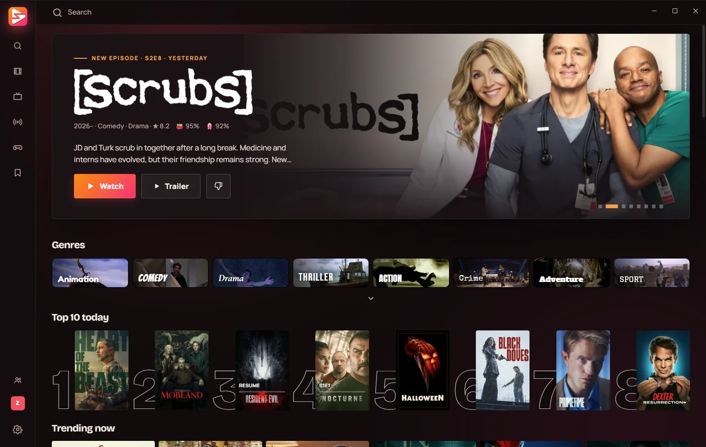
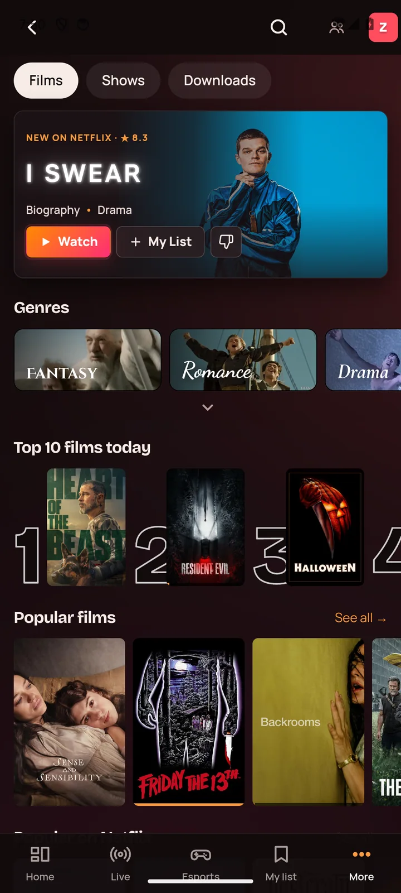
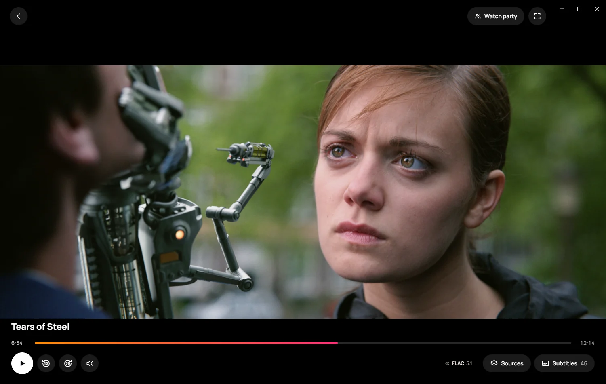
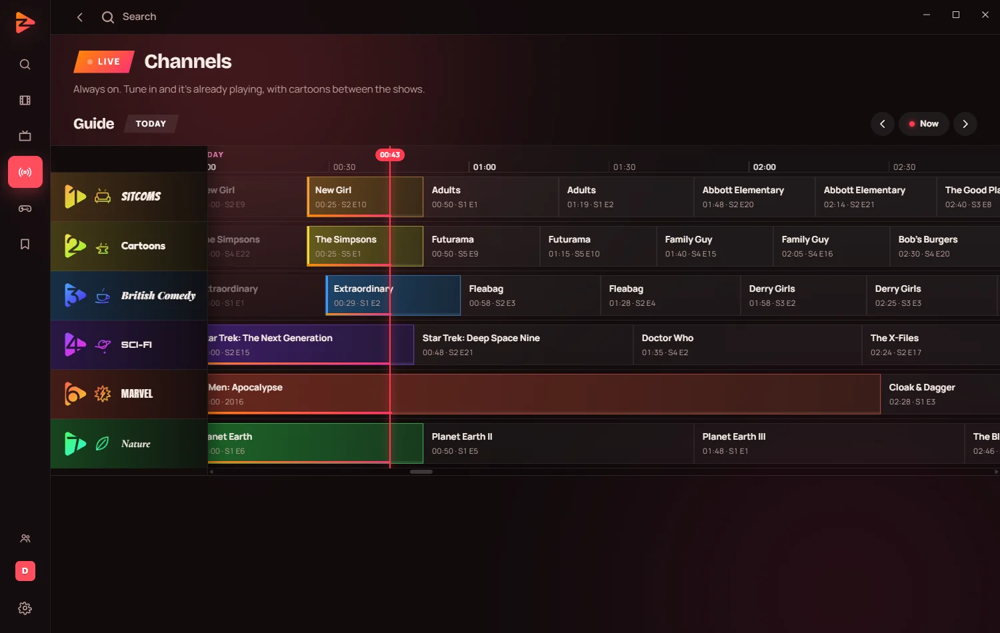
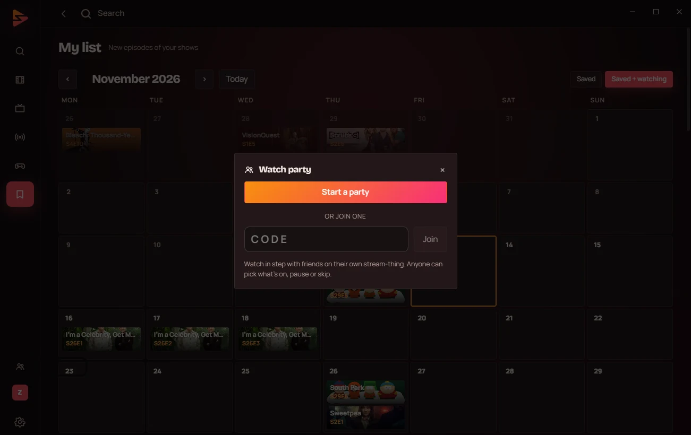
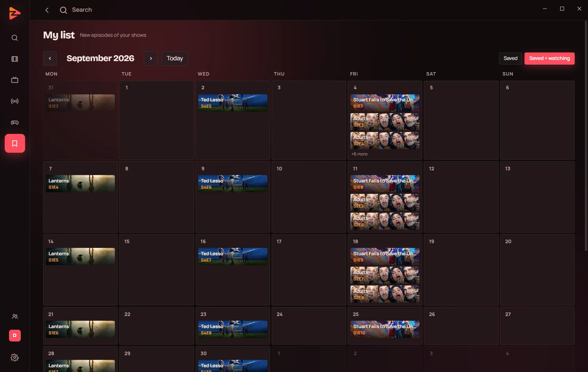

Everything you watch. On every screen.
DizziTV plays films, shows and live channels from the addons you choose, on your PC, your phone and your TV. Free.
or On a TV? Open Downloader and type6594945
How


One app for all of it.
A clean, full-screen player, with sources and subtitles a click away.
Always-on channels, with something already playing when you sit down.
Start a party from the player and share the code. Everyone watches in step, on their own screen.
Save what you want to watch, and see new episodes of your shows on the day they air.




Your download has started. Here's what comes next.
Installing is a minute's work.
DizziTV isn't in the Play Store, so Android checks it a little more carefully than usual. Here's every screen you'll see, so nothing's a surprise.
- Download it. Tap Download for Android, then open the file when it's finished.
- Let your browser install it. Android says
For your security, your phone isn't allowed to install unknown apps from this source.
Tap Settings, switch on Allow from this source, then go back. - Tap Install. If Play Protect says it hasn't seen this app before, tap Scan app, or More details → Install anyway. It's new to Google, not harmful.
- Open DizziTV. You can switch Allow from this source off again now. Updates install from inside the app.
For Android TV, Google TV and Chromecast with Google TV.
You're on your TV now: press OK on the download button at the top of the page, then follow from step 3.
- Get Downloader. TVs rarely have a browser, so install the free Downloader app (by AFTVnews) from Google Play on the TV.
- Let Downloader install apps. Settings → Apps → Security & restrictions → Unknown sources → switch on Downloader. Can't see it? On Google TV, go to Settings → System → About and press OK on Android TV OS build seven times first, then try again.
- Type the code
6594945Open Downloader, type that number in the address box (the # key brings up numbers), then Go. The download starts on its own. Codes not working? Typeziggygamedev.github.io/stream-thing-releases/tvinstead. - Install, then open. Choose Install, then Open. If Play Protect asks, choose Scan app or Install anyway. Afterwards you can switch Downloader off under Unknown sources again.
Works on the Fire TV Stick 4K, 4K Max and Cube, and Fire TV televisions. The newest sticks (the 4K Select and other Vega OS models) only install apps from Amazon's own store.
- Get Downloader. Search for Downloader on the Fire TV home screen and install it (free, by AFTVnews).
- Let Downloader install apps. Settings → My Fire TV → Developer options → Install unknown apps → Downloader: On. No Developer options? Go to My Fire TV → About and press OK on your device's name seven times first.
- Type the code
6594945In Downloader, type that number in the address box, then Go. Codes not working? Typeziggygamedev.github.io/stream-thing-releases/tvinstead. - Install, then open. Choose Install, then Open. Downloader offers to delete the file afterwards: say yes, it isn't needed any more.